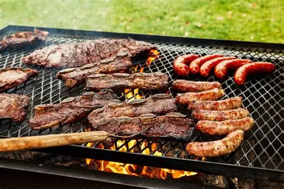

Asado Recipe
Back to Home

Step to step for a great asado recipe
The recipe consists of seasoning the meat with salt and pepper, then grilling it over an open flame or on a barbecue grill until it reaches the desired level of doneness. Serve with chimichurri sauce and your favorite sides.
Ingredients
- Great quality meat
- Salt
- Pepper
- Chimichurri Sauce
- Bread
Description
- Set the fire and let it sit for couple minutes
- Season the meat with salt and pepper
- Place the meat on the grill over the hot coals
- Cook to your desired level of doneness
- Serve with chimichurri sauce and bread